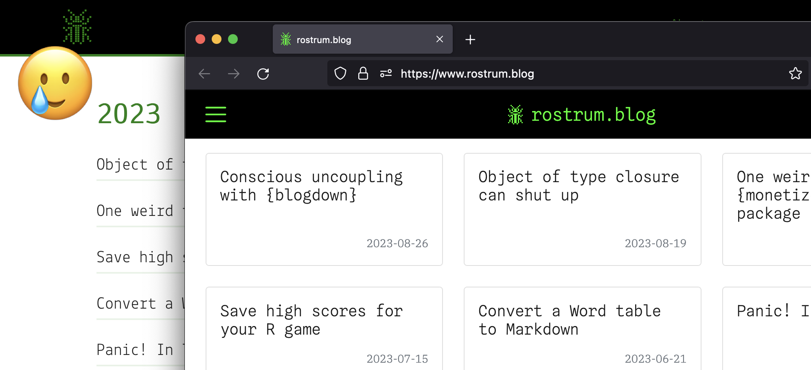

redirect_to <- paste0("/", list.dirs("posts", recursive = FALSE))
date_rx <- "\\d{4}-\\d{2}-\\d{2}" # YYYY-MM-DD format
# Extract date from path to Quarto post
date_portion <- regexpr(date_rx, redirect_to) |>
regmatches(redirect_to, m = _) |>
gsub("/", "-", x = _)
name_portion <- gsub(paste0("posts/", date_rx, "-"), "", redirect_to)
redirect_from <- paste0("/", date_portion, name_portion)
# 'From' and 'to' paths on same line, separated by a space
mapping <- paste0(
paste(redirect_from, redirect_to, sep = " "),
collapse = "\n"
)
cat(mapping, file = "_redirects") # dyk cat() can save files?
tl;dr
Here you go, the customary ‘i PoRtEd My R bLoG’ meta-post.
Quartoh-no
Yes, wow, porting {blogdown} to Quarto, such bravery.
The old source code is now archived on GitHub. The new source code is in a separate repo. There’s still some issues to sort out, but the site is now live on the worldwide web at doubleyoo double-doubleyoo full-stop rostrum full-stop blog1.
This post is not a tutorial and is not exhaustive; it’s just a grab-bag of notes for when I (absolutely inevitably) forget how I did certain things. I may add some other things later if there’s teething issues I haven’t uncovered yet.
The struggle is real
Things went pretty well, basically. It was just boring and slow2 to go through over 150 posts and perform (mostly) little corrections here and there. Herefollows some minor struggles.
Load-bearing posts
You could copy-paste your old {blogdown} source code into the structure and style required by Quarto. But why spend 10 minutes doing that when I could spend many more minutes creating a package to do it?3 This is a little manoeuvre I call ‘procrastination-driven development’. The outcome was my helper package {bd2q}, which I wrote about before. It was useful for some big structural changes and also some specific line edits to the large number of posts I wanted to port and re-render.
Tw*tter’s ex-API
I have some posts that used the Twitter API, like one about Wordle and a bunch about londonmapbot. I ended up hardcoding the outputs in these posts because Twitter is utterly borked. One bunglesome post used API data for an interactive leaflet map, but I had failed to save the intermediate data set. To retrieve the data, I had to extract it from the rendered leaflet HTML (!) with some garish string manipulation. Never again.
GitHub (In)Actions
I have a dynamic, stats-laden README for the blog that re-renders when I push to the repo. Famously, GitHub Actions never works first time. This time it was because you have to go into Settings > Actions > General on GitHub and set ‘Workflow permissions’ to ‘Read and write permissions’. For some reason.
Trough of a WAV
I have some little HTML audio whatsits on some pages, like the one about sonifying covid data. Despite putting .wav files in the appropriate directory, the sounds simply wouldn’t play. It’s because you need to specify resources: in your YAML header and then list the path to each one (for me this would be like - resources/roblox-oof.wav). The file is then correctly copied over to the _site/ folder for deployment.
Environmental disaster
To appease nerds, each post on the old blog had a record of the R and package versions used to render it. I did this by calling the session info in an expandable <details> block after a page divider (---). This looked a bit awkward when I tried it in Quarto.
Took me a while to realise: you can add arbitrary sections to each post’s appendix section with {.appendix} next to its heading. By default, my Quarto appendices have license information and footnotes, but I added an ‘environment’ section with the clickable session info in it. It’s written like this4:
## Environment {.appendix}
<details><summary>Session info</summary>
```{r sessioninfo, eval=TRUE, echo=FALSE}
cat("Last rendered:", format(Sys.time(), usetz = TRUE)); sessionInfo()
```
</details>I also introduced a ‘last rendered’ time before the session info. You can add this to the top of the post along with the author and publish date, but I didn’t want to put so much emphasis on it.
You can see an example of this at the bottom of this post, of course.
Misdirection
The old blog had URLs in the form rostrum.blog/YYYY/MM/DD/postname. Quarto does it like rostrum.blog/posts/YYYY-MM-DD-postname. I thought each Quarto post might need to be placed in a folder structure like /YYYY/MM/DD/postname.qmd to achieve the old URL style. This would be awkward to work with.
Aha, actually you can write a little _redirects text file with a line for each old-to-new path. Given the number of posts, I wrote a little script to generate this file5:
Originally I failed to include the leading slash in the redirect_from string, which would result in trying to redirect from the nonsense rostrum.blogYYYY/MM/DD/postname instead of rostrum.blog/YYYY/MM/DD/postname. Subtle.
In the new site’s index.qmd I also added a snippet to copy over the _redirects file into the _site/ folder on render, ready for deployment.
Cat egg or rice?
As I went through each old post, I removed all the ‘tags’ from the YAML and consolidated some of them into ‘categories’. I am still not happy with these categories. How can I extract them all for review? I’m sure there’s an easier way than regexing6 them out, but this hacky thing works:
posts <-
list.files("posts", pattern = ".qmd", recursive = TRUE, full.names = TRUE)
get_categories <- function(post_path, ignore_rx = "resources") {
post_lines <- readLines(post_path, warn = FALSE)
# Extract between the 'categories' YAML section and closing fence
cats_start <- which(post_lines == "categories:") + 1
cats_end <- which(post_lines == "---")[2] - 1
cats <- NULL
# Ignore other YAML sections and content after the categories
if (length(cats_start) == 1 & length(cats_end) == 1) {
cats <- gsub(" - ", "", post_lines[cats_start:cats_end])
cats <- cats[!grepl(ignore_rx, cats)]
}
return(cats)
}
cats_list <- lapply(posts, \(post) get_categories(post)) |>
setNames(dirname(post_names))
all_cats <- unlist(cats_list)
table(all_cats) |> sort(decreasing = TRUE)Oof, mostly just an excuse to use ‘cats’ as a variable name I think, but maybe this would be easier with some Quarto command or with the {yaml} package or something?
Note
Indeed. In a more recent blogpost I ended up using {yaml} for extracting a Quarto doc’s format from its YAML.
Goated Netlify
I remember struggling a bit when setting up Netlify to deploy the blog five years ago, but it seemed easier when I later set up my personal page. I dithered a little before setting up this new Quarto version of the blog, though. What if I click the wrong thing and the site disappears forever? Ah well.
But actually it was straightforward. The old and new blog are separate sites in my Netlify account and I just had to remove the ‘rostrum.blog’ domain from the old one and activate it on the new, which is under Site configuration > Domain management > Domains.
It was also easy to re-add Goatcounter—which counts but doesn’t track visitors—under Site configuration > Build and deploy > Post processing > Snippet injection. I pasted in a Goatcounter-provided snippet so it’s injected before </body>.
Selling out
I picked up a lot of miscellaneous tips and tricks from Danielle Navarro, Albert Rapp and the Quarto docs themselves. Do check those out.
Above all, thank you Yihui and contributors for {blogdown}. It felt cool to be a hipster {blogdown} user7. I held out for over five years, but the time has come and I have become… mainstream. The horror.
But how can I complain? A mid-life crisis precipitated by a blog transition is exactly where I saw this going, to be honest.
Hopefully I won’t be changing platforms again any time soon. But the posts are always ported first from my brain to the blog, so I could simplify the process by just… keeping them in my head? You’re preemptively welcome.
Environment
Session info
Last rendered: 2023-09-04 11:59:19 BSTR version 4.3.1 (2023-06-16)
Platform: aarch64-apple-darwin20 (64-bit)
Running under: macOS Ventura 13.2.1
Matrix products: default
BLAS: /Library/Frameworks/R.framework/Versions/4.3-arm64/Resources/lib/libRblas.0.dylib
LAPACK: /Library/Frameworks/R.framework/Versions/4.3-arm64/Resources/lib/libRlapack.dylib; LAPACK version 3.11.0
locale:
[1] en_US.UTF-8/en_US.UTF-8/en_US.UTF-8/C/en_US.UTF-8/en_US.UTF-8
time zone: Europe/London
tzcode source: internal
attached base packages:
[1] stats graphics grDevices utils datasets methods base
loaded via a namespace (and not attached):
[1] htmlwidgets_1.6.2 compiler_4.3.1 fastmap_1.1.1 cli_3.6.1
[5] tools_4.3.1 htmltools_0.5.5 rstudioapi_0.15.0 yaml_2.3.7
[9] rmarkdown_2.23 knitr_1.43.1 jsonlite_1.8.7 xfun_0.39
[13] digest_0.6.33 rlang_1.1.1 fontawesome_0.5.1 evaluate_0.21 Footnotes
I began in April 2023. I took my sweet time because I knew it would be dull, but also because I recently fell down an Action Button YouTube rabbit hole. I also got into the geocaching scene, both IRL (9 caches found, legend) and digitally, in the form of Zelda TOTK (‘YA-HA!’).↩︎
Also check out Antoine’s {editor} package that can reach into a file and make alterations. I wish I’d had this before I bodged together some similar functionality in {bd2q}.↩︎
If you’re wondering how to show a verbatim chunk in a Quarto doc without rendering it, there’s some documentation.↩︎
I like the ‘modern base’ aesthetic of the
date_portionobject here. Holdup, brb, just going to add ‘Modern Base Core’ to the Aesthetics Wiki.↩︎I desperately wanted to spell this ‘regexxing’, but ‘x’ appearing twice makes it look illicit.↩︎
At least that’s how I felt. Please don’t shatter my precious illusions.↩︎
Reuse
CC BY-NC-SA 4.0